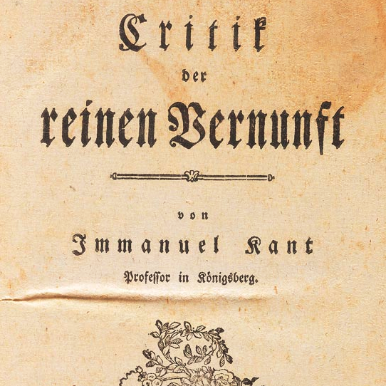

Kant’s First Critique
Tue., Apr. 8
In this class, we discuss Immanuel Kant’s Critique of Pure Reason, and its project of rescuing and revamping metaphysics. Kant thinks that
metaphysics is in trouble, and that in general there is an unrecognized problem of accounting for so-called “synthetic a priori cognitions”.
We sketch an overview of his transcendental idealist solution and discuss the difference between the kind of metaphysics that stays within the boundaries of
experience, and the kind of metaphysics that attempts to go beyond experience.
Key Concepts: Metaphysics, Copernican Revolution, Synthetic A Priori, Transcendental Idealism
Readings:
Other Resources:
Early Modern Texts
Stanford Encyclopedia of Philosophy
Internet Encyclopedia of Philosophy